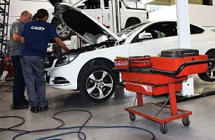
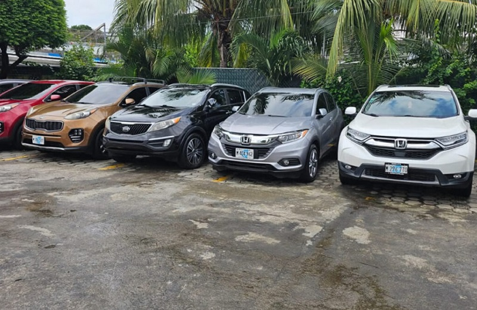
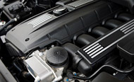

Acerca de Nosotros

servicio excepcional en el cuidado de su automóvil
Bienvenido a Autolote Villanueva, tu taller de confianza para servicios y reparaciones automotrices. Con más de 10 años de experiencia en la industria, nos dedicamos a brindar soluciones integrales para el mantenimiento y reparación de vehículos de todas las marcas y modelos.
Instalaciones
P. Los Naranjos 106, Puerta Real, S.L.P.

Tu mejor opción
Nuestra Misión
Calidad en servicios y reparaciones
proporcionar mantenimiento y reparación de alta calidad, garantizando la seguridad y eficiencia de los vehículos, mientras se asegura la satisfacción del cliente a través de un servicio excepcional y transparente, el uso de tecnología avanzada y la promoción de prácticas sostenibles.
Especialización
INDUSTRIA AUTOMOTRIZ

Servicios certificados en:
- Servicio de frenos
- Revisión y rotación de neumáticos
- Afinaciones y cambios de aceite
- Suspensión
- transmisión